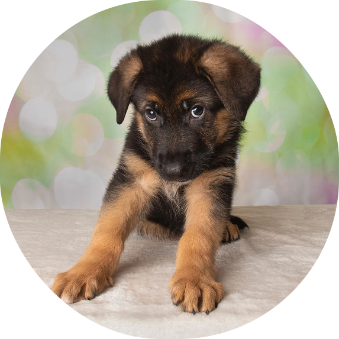

They have been bred by humans for a long time, and
probably were the first animals ever to be domesticated.
Today, some dogs are used as pets, others are used to
help humans do their work. They are a popular pet because
they are usually playful, friendly, and listen to humans
They are fast, energetic and good sports companions. They
normally have a life span of 10-13 years but some breeds
can live up to 20 years too.
Yorkshire terrier
Tiny but full of personality, these dogs are popular
world over. They are affectionate family dogs that
are happy to play and run around with children, or
cuddle up with family members. Originating from
rainy Yorkshire in England, these dogs do
surprisingly well in warmer climates, perhaps due
to their silky fur. Their small size also makes them
great apartment dogs, though they can be difficult
to housetrain and their yappy nature may annoy
your neighbours – take time to train your dog
from an early stage to avoid these problems.
Havanese
Affectionate yet agile, the Havanese is a versatile
dog breed, which may explain its popularity.
Originating from Cuba, these little dogs have silky
coats that help shield them from the sun, which
makes them ideal dogs for the Middle East. They
adapt easily to apartment life due to their small
size. They are affectionate, though they may suffer
from separation anxiety. Don’t mistake the
Havanese for a mere lapdog – they are very agile
and intelligent, and excel in many canine sports
and careers, such as assisting the handicapped.
Cavalier King Charles Spaniel
Small, sweet-tempered and sporty, the Cavalier is
one of the most popular dogs in the world. These
beautiful, energetic and gentle dogs are ideal for
families, and are very trainable. Cavaliers
sometimes suffer from separation anxiety, so
shouldn’t be left alone for long time periods. They
also need daily exercise to keep them fit and
prevent them from becoming bored, as a bored
Cavalier may be destructive. Make sure not to
take them out during the hottest hours of the day,
as Cavaliers don’t always do well in hot climates.
German Shepherds
The German Shepherd is a popular pet in Dubai,
though they are also used as guard dogs.
Shepherds are large, intelligent dogs and are easily
trained. They are also very versatile and have been
used for herding, agility, police work, guide dog
work, and many other disciplines. Although they
often have reserved characters, they are very loyal
dogs and make good family pets. German Shepherds
needs to be socialised and trained from an early
age to make sure they grow up to be well behaved dogs.
Due to their large size, they may not be the best
apartment dogs. They also need regular daily exercise:
both physical and mental.

Cane Corso
Also called the Italian Mastiff, these dogs
are often used as guard dogs due to their
powerful and muscular build. They are also
loyal family dogs, though often uninterested
or suspicious of strangers. The Corso hails
from Italy, so they cope well with the Dubai
heat. The Corso gets bored very easily. A
bored Corso will probably dig holes and chew
the furniture if given nothing to do, so find
an activity for him to do, such as agility or
obedience classes. An active Cane Corso is a
happy Corso.
Golden Retriever
The Retriever is perhaps the quintessential family dog.
Cheerful, trustworthy, and playful, this dog is
universally beloved. They are great with children and
other pets, intelligent and eager to please, and ideal
for first-time dog owners. Retrievers are large dogs
and prone to shedding, so they will be happier in a
house than an apartment. Be sure to find a reputable
Breeder, as Golden Retrievers are prone to health
problems such as hip dysplasia.
Great Dane
Dubai is the city of superlatives: the richest,
the hottest, the biggest. The Great Dane
certainly fits into that last category, and
often appeals to those who wish to impress.
The Great Dane is a typical gentle giant: their
size belies their friendly nature. Great Danes
aren’t particularly active and are surprisingly
comfortable in apartments, although they may
accidentally knock things over due to their size.
Pomeranian
From the largest dogs to one of the smallest,
here’s the Pomeranian. Don’t tell the Pomeranian
what he can and can’t do, because these little
dogs are very determined and are often on par
with bigger dogs in disciplines such as agility,
search and rescue, and obedience training. These
little dogs will be happy to live in an apartment
but don’t enjoy the heat of Dubai due to their
fluffy coats; luckily air conditioning helps to
keep them comfortable.
Beagle
A short-furred breed with large soulful eyes,
Beagles are playful and friendly, and popular
all over the world. They make fantastic pets,
especially for families with children, and are
very intelligent, if a bit stubborn. Beagles
have a few quirky behaviours, such as the baying
sounds they make when they are lonely or smell
something interesting, which is important to keep
in mind if you lived in an apartment.